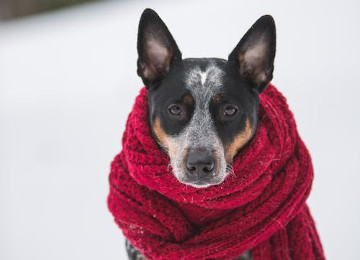

Salva una vida. Se estima que solo la mitad de perros vuelven a sus hogares o son adoptados.
Salva una vida. Se estima que solo la mitad de perros vuelven a sus hogares o son adoptados.
Cuando se adopta un animal, queda un espacio libre para otro que lo pueda necesitar. Así se salva más de una vida.
Un perro sin raza es único, más saludable y longevo.
Se educa a los más peques a ser más compasivos(as), respetuosos(as)y afectuosos(as).
No te abandonará nunca. Son los seres más amorosos y agradecidos.
El encuentro es mutuo. Son dos seres destinados por el Universo.
Aficionado al Desarrollo Web, amante de los animales y promotor de la adopción responsable.